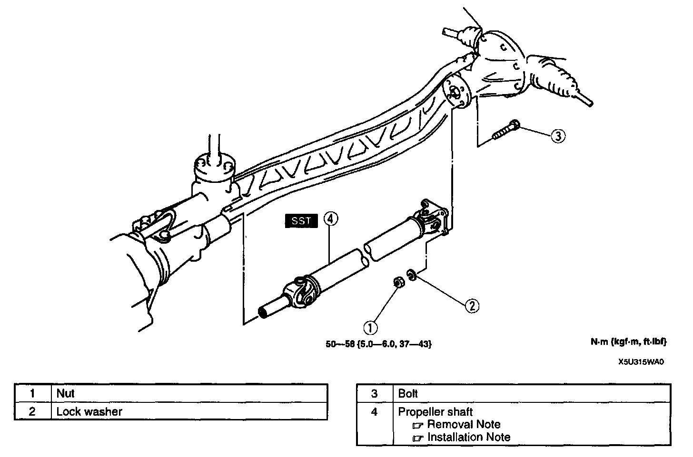
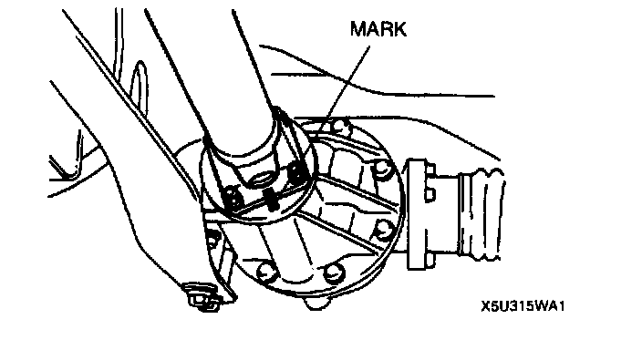
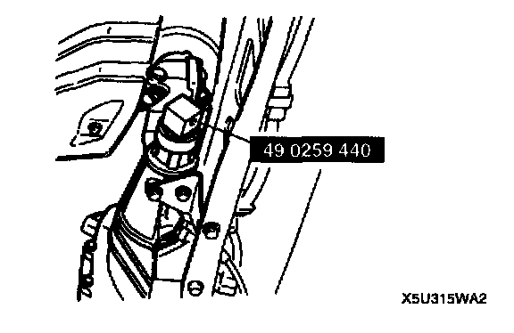
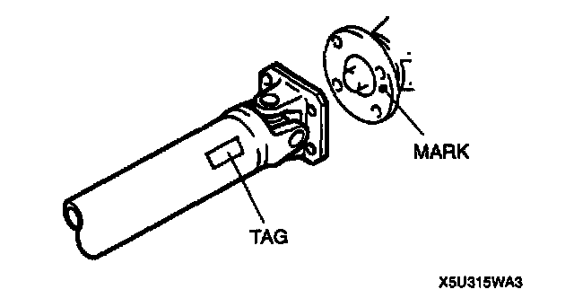
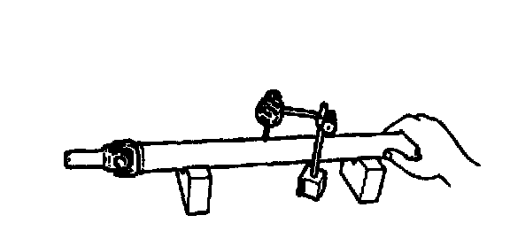
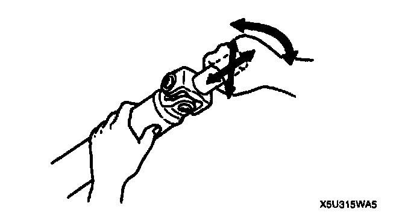

Drive/Propeller Shaft: Service and Repair
REMOVAL/INSTALLATION
1. Remove the presilencer.
2. Remove in the order indicated in the table.
3. Install in the reverse order of removal.
Propeller Shaft Removal Note

1. Before removing the propeller shaft, mark the flanges for correct installation.

2. Remove the propeller shaft from the extension housing, and immediately install the SST to prevent oil leakage.
Propeller Shaft Installation Note

1. Align the marks made during removal, and install the propeller shaft. If installing a new propeller shaft, align the differential companion flange precast marking with the tag on the propeller shaft.
Tightening torque 50-58 Nm (5.0-6.0 kg-m, 37-43 ft. lbs.)
2. Verify that there is no abnormal noise or vibration when driving the vehicle. If noise or vibration comes from the propeller shaft, replace the propeller shaft.
Propeller Shaft Inspection
Caution:
- Cleaning sealed bearings with cleaning fluids or a steam cleaner can wash the grease out of the bearing.
1. Clean the propeller shaft (except for the universal joint) with a steam cleaner or solvent.

2. Measure the propeller shaft runout by using a dial indicator. Replace the propeller shaft if runout is excessive.
Maximum runout 0.4 mm (0.016 inch)

3. Move the universal joints in the directions shown, and check for universal joint looseness. If there is looseness, replace the propeller shaft.
Note:
- Starting torque: 0.30-0.98 Nm (3.0-10.0 kg-cm, 2.6-8.6 inch lbs.)
4. Inspect for operation of the universal joint. If the universal joint has excessive resistance, replace the propeller shaft.